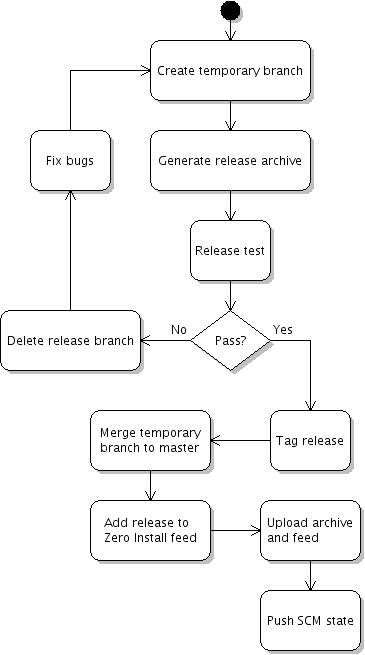
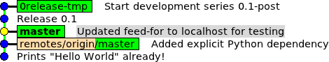

0release¶
Maintainer: Thomas Leonard
License: GNU Lesser General Public License
Source: https://github.com/0install/0release
Zero Install feed: http://0install.net/2007/interfaces/0release.xml
0release can be used to make new releases of your software. It handles details such as setting the version number and release date, tagging the release in your version control system and updating your Zero Install feed.
The general process for an architecture-independent package (e.g. a Python program) is shown in the diagram below (releasing a source package and multiple binary packages is also possible):

After doing some development (so you have something to release!) you use 0release to prepare a new release. It will:
- Commit a release revision in your version control system (e.g. with a version of
1.3) on a new temporary branch. - Export the release revision and create a tarball for distribution.
- Unpack the release and run the unit tests.
- Update the version numbers in your version control system again (e.g. to
1.3-post).
You can then run any final (manual) tests on the release. If you're happy with the result, then 0release can publish it (e.g. submit the release to 0repo, and push the new commits and tag to your public version control system). Otherwise, 0release will discard the temporary branch so that you can fix the problems and try again.
Note
You don't need to use this program to make your software available through Zero Install. You can just create a tarball using your normal process and then publish a feed for it. However, 0release can automate some of the steps for you. It's especially useful for new projects, where you don't yet have an established process. Having a program to handle new releases brings several advantages over doing it manually:
- Making a new release is quicker, since many steps are automated.
- You can't forget some steps (did you forget to tag version 1.2? did you remember to compile the translations in 1.4? etc).
- You get a consistent structure each time (are your archives called
myprog-V.VV-linux.tgzorMy-Prog-Linux-V.VV.tar.gz?). - If someone else needs to make a release, they will follow the same process.
Git is fully supported. It should be fairly easy to support other (distributed) version control systems.
Preparing your source repository¶
You'll need a local feed within your source directory (under version control). This contains the same information as a normal published feed would (name, description, dependencies, etc). The only differences are:
- The local feed refers to a local directory (e.g.
id="."for the directory containing the local feed) rather than a secure hash. - It has no digital signature.
- The version will be a development version (e.g
1.2-postif your last released version was1.2).
Having a local feed is useful even if you don't use 0release, because it lets people check out a development snapshot of your program and then register it (using 0install add-feed) or run it directly with Zero Install handling its dependencies.
A minimal Hello World example is available for testing. You can check it out like this, using the Git version control system:
$ git clone git://github.com/0install/hello-python.git
To check that you can run it, use 0install on the feed:
$ cd hello-python
$ 0install run HelloWorld.xml
Hello World!
HelloWorld.xml is the local feed. Its contents look like this:
<?xml version="1.0" ?>
<interface xmlns="http://zero-install.sourceforge.net/2004/injector/interface">
<name>HelloWorld</name>
<summary>minimal demonstration package for 0release</summary>
<description>
This program outputs the message "Hello World". You can create new releases of it
using 0release.
</description>
<homepage>http://0install.net/0release.xml</homepage>
<feed-for interface='http://0install.net/tests/HelloWorld.xml'/>
<implementation id="." version="0.1-pre">
<command name='run' path='hello.py'>
<runner interface='https://apps.0install.net/python/python.xml'>
<version before='3'/>
</runner>
</command>
</implementation>
</interface>
Note the <feed-for> element. This is where the main feed is (or will be) published. If you want to follow this tutorial, change it to point to a location to which you can upload files (e.g. http://localhost/~me/testing/HelloWorld.xml) and commit the change (git commit -a).
You should add any dependencies inside the <implementation> element (see the feed specification for details, or edit the feed using 0publish-gui if you want a graphical interface). This example program is so simple it doesn't have any dependencies beyond its interpreter: Python < 3
Creating the releases directory¶
Each time you create a new release, the resulting files go in your releases directory. Create the directory now and then run 0release inside it, giving it the location of your local feed.
$ mkdir -p ~/releases/hello
$ cd ~/releases/hello
$ 0install run http://0install.net/2007/interfaces/0release.xml ~/hello-python/HelloWorld.xml
Setting up releases directory for HelloWorld
Success - created script:
~/releases/hello/make-release
Now edit it with your local settings.
Then, create new releases by running it.
This will create a single executable file in the directory, called make-release. Run this whenever you want to create a new release of your software.
- The
make-releasefile contains local configuration information (e.g. the location of the local feed on your computer). - General information about your program goes in the source directory so it can be shared by other developers.
The final script might look like this:
#!/bin/sh
# Your public version control repository. When publishing, the new
# HEAD and the release tag will be pushed to this using a command
# such as "git push origin master v0.1"
# If unset, you'll have to update it yourself.
PUBLIC_SCM_REPOSITORY=origin
cd `dirname "$0"`
exec 0install run http://0install.net/2007/interfaces/0release.xml \
--release ~/hello/HelloWorld.xml \
--public-scm-repository="$PUBLIC_SCM_REPOSITORY" \
"$@"
Warning
Do not put make-release under the project's version control! First, because it contains user-specific information, and secondly because if you make a mistake then 0release will make you retract the release and restart the whole release process from the beginning because you changed a file that's part of the release... this is not fun ;-)
Creating a release candidate¶
When you want to make a new release, simply run the make-release script, like this:
$ cd ~/releases/hello
$ ./make-release
Releasing HelloWorld
Snapshot version is 0.1-pre
Version number for new release [0.1]:
You are prompted to enter the version number for the new release. You can just press Return to accept the default of 0.1 (since the version in the local feed was 0.1-pre). It then prints:
Releasing version 0.1
HEAD is now at 387535a Updated feed-for to localhost for testing
SKIPPED unit tests for ~/releases/hello/0.1/helloworld-0.1/HelloWorld.xml (no 'test' command)
Wrote source feed as helloworld-0.1.xml
Wrote changelog from start to here as changelog-0.1
Candidate release archive: helloworld-0.1.tar.bz2
(extracted to ~/releases/hello/0.1/helloworld-0.1 for inspection)
Please check candidate and select an action:
P) Publish candidate (accept)
F) Fail candidate (delete release-status file)
(you can also hit CTRL-C and resume this script when done)
Publish/Fail:
0release has now created a candidate archive for you to examine. You might like to try running the program now. Note that the archive only contains files that are under version control.
You can either leave 0release running while you check it, or you can press CTRL-C to exit and run the make-release script again later. It will remember where it was (it stores the current status in a new release-status file).
As well as exporting the release archive, 0release also updates your Git repository by committing two new revisions. You can see them using gitk --all:

The lowest two revisions are the history you started with. The master branch adds the commit where you changed the <feed-for> element. This is also the currently checked-out version. 0release has created a new branch called 0release-tmp with two new revisions. Release 0.1 is the version that will be released. Its local feed has the version 0.1 and today's date as the release date. The archive was created from this revision. The next revision has a version of 0.1-post and removes the release date again. Note that the release hasn't been tagged yet in Git, but 0release has recorded the revision ID in case you decide to accept the release candidate.
If you discover any problems you can go ahead and commit a fix, which will appear on the master branch (not on the 0release-tmp branch, which will be discarded if you fail the release).
Accepting the release candidate¶
We'll just check that the release works:
$ 0install run 0.1/helloworld-0.1/HelloWorld.xml
Hello World!
Looks good. If you killed the release script (with CTRL-C), run it again now to return to the Publish/Fail prompt. Choose Publish (you can just type p<Return>).
Note
0release will sign the release tag using your GPG key. If you don't have one, use gpg --gen-key to create one now. If you have multiple keys, pass -k ID to 0release to choose which one you want to use.
The temporary files (release-status and the extracted helloworld-0.1 directory) are removed, and it creates a merged.xml feed. In our case, that's just the same as the one we tested, but if we were releasing a program that needed compiling, it would gather together the source and all the binaries into one feed here.
Finally, it hands this off to 0repo:
Tagged as v0.1
HEAD is now at 07f3c9e Start development series 0.1-post
Deleted branch 0release-tmp (was f9fb36a).
Handing off to 0repo:
0repo add -- merged.xml
[...]
If you check your Git repository, you'll see that 0release has now tagged the release, and updated the "master" branch to the tip of the temporary branch:

If, instead, you had found a problem with the release you would have selected Fail at the prompt. 0release would have removed the temporary branch (leaving master where it was) and deleted the temporary files.
Customising the release process¶
For more information, see release phases.
Source and binaries¶
If your program needs to be compiled, see Releasing binaries.
Aborting a release¶
You can abort a release easily at any point before the Publish step. Once you select Publish, externally-visible changes start to be made (e.g. archives are uploaded to your file-server).
- To abort before publishing
- Just select
Failfrom the menu. This deletes therelease-statusfile (which you could also do manually). To avoid confusion, selectingFailalso removes the temporary release branch from Git and renames the release directory (to$version~) to make it clear that they're not being used. - To abort after publishing has started
- Follow the steps in Unpublishing a release below to undo any publicly visible changes. Then delete the
release-statusfile.
Unpublishing a release¶
So, you didn't test the release properly, and now you want to pull it down, eh?
The best way to do this is to set the stability to BUGGY in the public feed (and re-run 0repo to regenerate the signature), and then publish a new fixed release, with a new version number.
But if you really insist on trying to unpublish a release and pretending it never happened, here's what you have to do:
-
Edit the master feed (in 0repo's
feedsdirectory) and delete the new<implementation>. Run0repoto sign and publish the updated feed.Note: if you keep your feed under version control then you could revert the change. However, if anyone got the new version before you reverted it, then
0installwill refuse to go back to the previous version, assuming that this is a replay attack. So create a new signature, with a fresh time-stamp. -
Reset
HEADto before the release (e.g.git reset --hard v0.1^) and delete the tag itself (e.g.git tag -d v0.1). Delete the remote tag at the server (e.g.git push origin :v0.1 master). Like0install, if anyone saw the release in Git, their Git will refuse to go back to an older version. Tell them to use-f. -
Delete the tarball from your server.
Do I need to keep the releases directory?¶
It's best to keep the releases directory:
- You want to keep the make-release script so you don't have to write it again each time.
- Keeping the previous archive allows diffing against it as an extra check when making a new release.
So, there's nothing too critical in the directory, but it's easiest to keep everything.
TODO: 0release should also be able to diff against the previous version using the cache (downloading the archive if missing), rather than relying on the previous archive being in the releases directory.